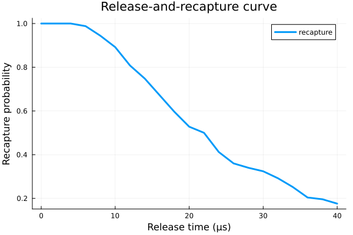

Examples
The package is easiest to understand in the same order as a neutral-atom experiment: characterize the trap, infer temperature, model single-atom Rydberg excitation, and finally move to blockade-mediated two-qubit dynamics.
Release And Recapture
Release-and-recapture is the natural starting point because the inferred atom temperature feeds directly into the motion-sensitive Rydberg simulations.
using NeutralAtoms
using Plots
using Random
Random.seed!(1234)
U0 = 1000.0
w0 = 1.1
λ_trap = 0.852
z0 = w0_to_z0(w0, λ_trap, 1.3)
atom_params = [86.9091835, 35.0]
trap_params = [U0, w0, z0]
tspan = collect(0.0:2.0:40.0)
recapture, acc_rate = release_recapture(
tspan,
trap_params,
atom_params,
250;
harmonic = true,
)
plot(tspan, recapture; lw = 3, label = "recapture")
xlabel!("Release time (μs)")
ylabel!("Recapture probability")
title!("Release-and-recapture curve")
harmonic = true is the fast approximation for documentation and quick scans. For full-temperature studies in the Gaussian trap potential, switch to harmonic = false.
Single-Atom Two-Photon Rydberg Excitation
The single-atom model follows the error mechanisms emphasized in de Léséleuc et al. (2018): thermal motion and Doppler shifts, spontaneous emission, and laser phase noise.
using NeutralAtoms
using QuantumOptics
using Plots
using Random
Random.seed!(1234)
atom_params = [86.9091835, 35.0]
trap_params = [1000.0, 1.1, w0_to_z0(1.1, 0.813, 1.3)]
f = collect(0.02:0.02:0.20)
phase_params = [1.0e-6, [3.0e-6], [0.02], [0.10]]
red_phase_amplitudes = ϕ_amplitudes(f, phase_params)
blue_phase_amplitudes = ϕ_amplitudes(f, phase_params)
wr = 10.0
wb = 3.5
zr = w0_to_z0(wr, 0.795)
zb = w0_to_z0(wb, 0.475)
Ωr = 2π * 8.0
Ωb = 2π * 8.0
Δ0 = 2π * 250.0
red_laser_params = [Ωr, wr, zr, 0.0, 1.0]
blue_laser_params = [Ωb, wb, zb, 0.0, 1.0]
detuning_params = [Δ0, δ_twophoton(Ωr, Ωb, Δ0)]
decay_params = [2π * 1.0, 2π * 1.0, 0.0, 0.0]
tspan = collect(0.0:0.05:T_twophoton(Ωr, Ωb, Δ0))
cfg = RydbergConfig(
tspan,
ket_1,
atom_params,
trap_params,
2,
f,
red_phase_amplitudes,
blue_phase_amplitudes,
red_laser_params,
blue_laser_params,
detuning_params,
decay_params,
true,
true,
true,
true,
false,
)
ρ, ρ2 = simulation(cfg; reltol = 1.0e-6, abstol = 1.0e-8)
rydberg_probs = get_rydberg_probs(ρ, ρ2)
plot_rydberg_probs(tspan, rydberg_probs)
0.0%┣ ┫ 0/2 [00:00<00:00, -0s/it]
50.0%┣█████████████████████▌ ┫ 1/2 [00:07<Inf:Inf, InfGs/it]
100.0%┣███████████████████████████████████████████████┫ 2/2 [00:08<00:00, 8s/it]
100.0%┣███████████████████████████████████████████████┫ 2/2 [00:08<00:00, 8s/it]Key points in this workflow:
samples_generate,R, andVencode finite-temperature motion.Δandδconvert that motion into one- and two-photon Doppler detunings.Sϕ,ϕ_amplitudes, andϕcreate stochastic phase-noise trajectories.simulationaverages the master-equation dynamics over those realizations.
Blockade-Mediated Controlled-Phase Simulation
The two-qubit model is built around the global-pulse blockade protocol discussed in Levine et al. (2019). The key extra ingredients are the atom-pair geometry, the blockade interaction c6 / R^6, and the phase step ξ between the two Rydberg pulses.
using NeutralAtoms
using QuantumOptics
using Plots
using Random
Random.seed!(1234)
atom_params = [86.9091835, 20.0]
trap_params = [1000.0, 1.1, w0_to_z0(1.1, 0.813, 1.3)]
f = collect(0.02:0.02:0.20)
zero_noise = zeros(length(f))
wr = 10.0
wb = 3.5
zr = w0_to_z0(wr, 0.795)
zb = w0_to_z0(wb, 0.475)
Ωr = 2π * 6.0
Ωb = 2π * 6.0
Δ0 = 2π * 200.0
red_laser_params = [Ωr, wr, zr, 0.0, 1.0]
blue_laser_params = [Ωb, wb, zb, 0.0, 1.0]
detuning_params = [Δ0, δ_twophoton(Ωr, Ωb, Δ0)]
decay_params = [2π * 0.5, 2π * 0.5, 0.0, 0.0]
ket_plus = (ket_0 + ket_1) / sqrt(2)
tspan = collect(0.0:0.05:0.20)
cz_cfg = CZLPConfig(
tspan,
ket_plus ⊗ ket_plus,
atom_params,
trap_params,
1,
f,
zero_noise,
zero_noise,
red_laser_params,
blue_laser_params,
detuning_params,
decay_params,
true,
true,
false,
true,
false,
[[0.0, 0.0, 0.0], [4.0, 0.0, 0.0]],
2π * 500.0 * 4.0^6,
1.0,
1.0,
π / 2,
0.0,
)
ρ, ρ2 = simulation_czlp(cz_cfg; reltol = 1.0e-6, abstol = 1.0e-8)
two_qubit_probs = get_two_qubit_probs(ρ, ρ2)
plot_two_qubit_probs(tspan, two_qubit_probs)
0.0%┣ ┫ 0/1 [00:00<00:00, -0s/it]
100.0%┣██████████████████████████████████████████┫ 1/1 [00:04<Inf:Inf, InfGs/it]
100.0%┣██████████████████████████████████████████┫ 1/1 [00:04<Inf:Inf, InfGs/it]For a full CZ analysis workflow, follow this sequence:
- Build a physically calibrated
CZLPConfig. - Use
simulation_czlpfor the state evolution. - Use
get_parity_fidelityto calibrate the phase compensation. - Use
get_parityandget_cz_infidelityto analyze gate performance.